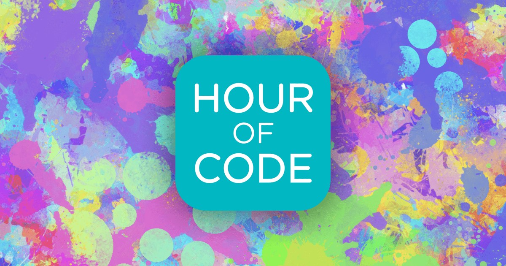

Information about the hour of code project:
Aim of this project:
The Hour of Code is a one-hour introduction to Computer Science and Coding. It shows that anyone with any background can easily learn the essentials and enter the field of Computer Science with the basic knowledge obtained from it. In 2020, the event took place from 7th-13th December.

Links:
Personal interests:
Before starting this project, we proceeded to choose a group of kids who would have needed it most. By needing it most we are implying to those schools where events such as Honor of Code are not likely to be taken.
Our team held this project in Azerbaijani so that kids don't experience any language barriers.
The process:
On December 12, at 4 o'clock, we had an online lesson at Shusha (Karabakh) SecondarySchool No. 5. We discussed the hour of code with the students. There were approximately 20-22 students in the class and they joined us and attended the lesson of the hour of code. Unfortunately, during the period of this project pandemic was taking a place. Thus, we had to conduct it online. We shared the screen on our computers and explained the basic concepts of coding, and gave an introduction to the field of Computer Science to the children via slides, videos, and pictures. Moreover, we had several meetings, only between teammates so that we practice and see how the process goes. If the circumstances would have let us, we would conduct this lesson in the actual school itself. We would have had a projector, an electronic board, or a computer room to run this project in a more interactive and efficient manner.
Division of Labour:
Sema Valizade - started with the introduction, gave general information about ADA University.
Nihad Mammadli - gave information about the hour of code and code.org and emphasized how important it is for children.
Mirvari Mammadli - gave programming information and asked some easy questions.
After giving the information, each of us played some games on code.org, showed examples, and solved the problems together with the students.
Anticipated difficulties & solutions:
1. Scarcity (limited amount of kids in a class):
The first anticipated difficulty was that we did not have enough kids in a class, as the school we chose was a refugee school, and there were few kids in the classrooms. Therefore, we had to combine the two classes so that there would be at least 20 students as it was a requirement.
2. Several attempts to choose a school:
We were able to choose Shusha (Karabakh) Secondary School No. 5 in our third attempt. The first school we contacted was School No. 181. We have talked with the school, explained to them our plan of action, and sent the permission document provided by the ministry of education and ADA. But unfortunately, for some unknown reasons, the school rejected our offer. We had to search for another school. We decided to choose Lyceum-SchoolNo.6 as one of our groupmates has graduated from there. After arranging the meeting we found out that this school has already been chosen by another team and we had to search for another school again. We did not give up and in the end, we found the perfect school (Shusha(Karabakh) Secondary School No. 5) to conduct our project in.
3. Unstable internet connection:
The third anticipated difficulty was that we could lose the internet connection or have problems with it while conducting the lesson of the hour of code. To prevent this from happening each of our group mates made sure to check the connection a day ahead and some of us bought an extra package in case we lose the connection.
4. Limitations of code.org game:
In certain games, after reaching several levels there were no translations to the Azerbaijani language. At the moment we didn't encounter any problems as each member of our team has knowledge of English, but it might be challenging for the students who will continue with these games in the future.
5. Pandemic:
As the current situation of covid-19 within our country (Azerbaijan) wasn't stable we had to do proceed with an online event. This prohibited us from real-life human interaction and all the advanced technologies as projector and etc that we could have used. But as we had our slides and games prepared the event went smoothly and the kids enjoyed it.
Outcome:
None of the problems we had encountered during the whole process stopped us, it just made us work harder, manage our resources and time better as a team. Each of the team members (Sama Valizada, Nihad Mammadli, and Mirvari Mammadli) is left extremely satisfied as the kids were happy, understood the basic concept of coding, and their interest escalated towards this topic. Moreover, kids promised us to continue playing code.org games and some of them thought of the idea of going into the Computer Science field. Overall we achieved the aim of the project including our interests.
Special thanks:
We would all like to thank and express our gratitude to the Shusha(Karabakh) Secondary School No. 5, ADA University, and teachers.
Recommendations:
Code.org game issue might be resolved if the staff will add translations to all the levels of games. Thus, leading to more popularity of these games and website amongst the Azerbaijani-speaking users.